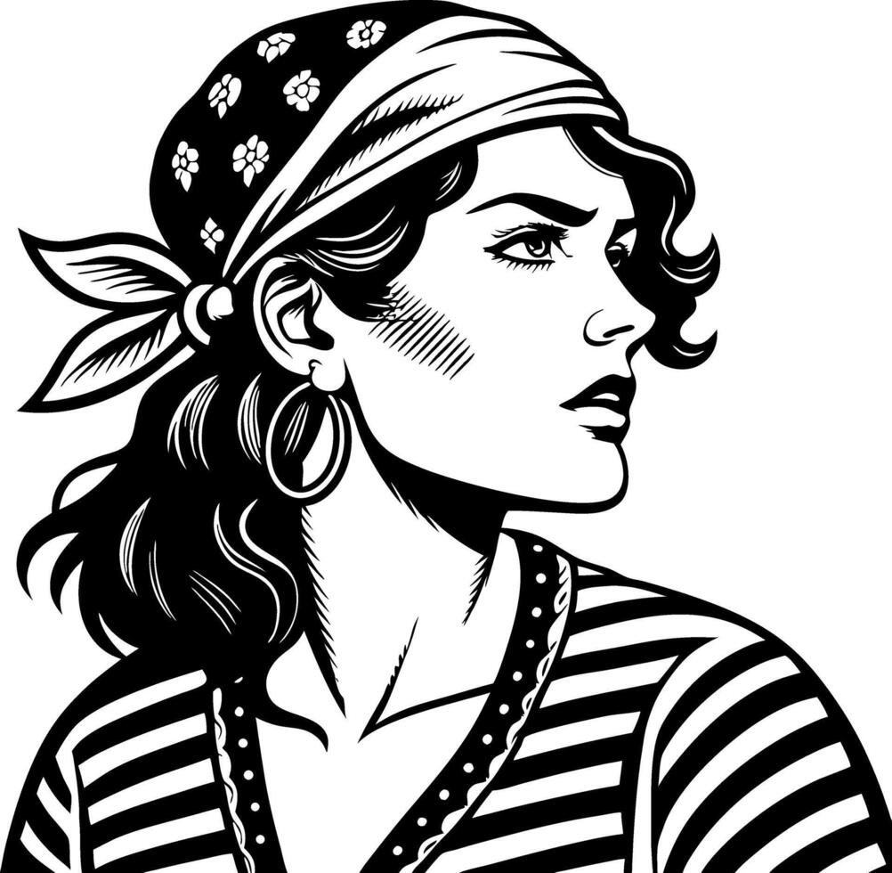

Welcome, fellow adventurer! This is the uncharted archive of my personal voyage.
The Unconventional Concept: This portfolio rejects the traditional website model of top navigation menus, banners, and static footers. Instead, it is an interactive treasure atlas navigated via physical directional steering controls. The visitor must explore the islands to discover who I am, uncovering milestones as pirate gold buried beneath the final shore.
"Treasure ahead through the lilac mist! Keep navigating southeast!"
